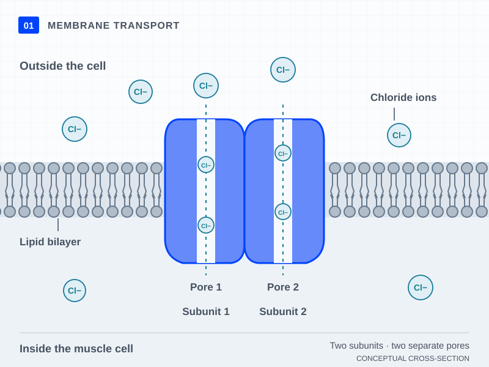

Discover the biology behind a gene.
Build the diagram, connect the clues, and discover a gene–condition relationship.
ROUND 01 / 1012 pieces · Introductory
Your browser is blocking saved progress. Keep this page open to finish the round.
COLLECTION COMPLETE
Ten rounds. Ten connections.
You explored 10 gene–condition relationships. Return to any round to revisit the science.
00:00
Practice at your own pace. Choose a mode before you begin.

FIG. 01 / CELL MEMBRANESCHEMATIC · NOT TO SCALE
Read the diagram description
Pieces12 remaining
Drag a piece onto the board, or select it and click a position.
Build an explanation, one clue at a time.
Clues unlock at milestones. Two questions connect the biology; the gene and condition names unlock last.
GENE & CONDITION